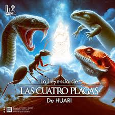
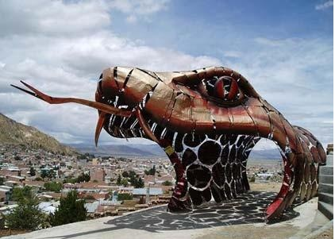
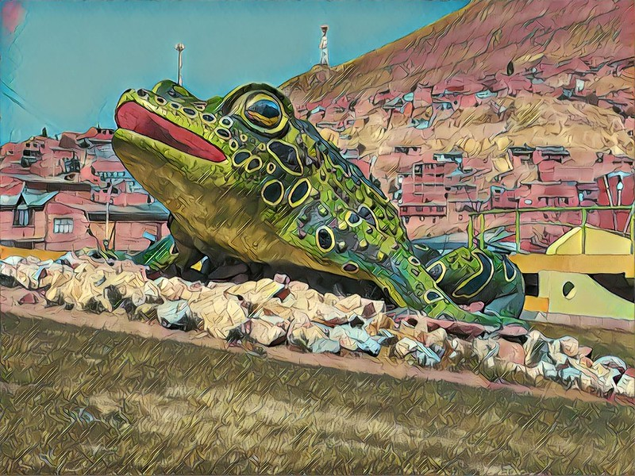
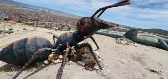
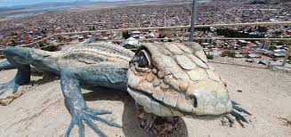

Según la leyenda del Carnaval de Oruro, el dios Wari envió cuatro criaturas gigantes para destruir la ciudad: una serpiente, un sapo, un lagarto y hormigas. Sin embargo, la Virgen del Socavón protegió a los habitantes y convirtió a estas criaturas en piedra. Hoy estas figuras forman parte importante de la historia y cultura de Oruro.

Representa una de las criaturas enviadas por el dios Wari para atacar la ciudad.

El sapo gigante es parte de la leyenda y hoy existe una roca con su forma.

Las hormigas simbolizan una plaga enviada para destruir los cultivos.

El lagarto también fue derrotado y convertido en piedra según la leyenda.